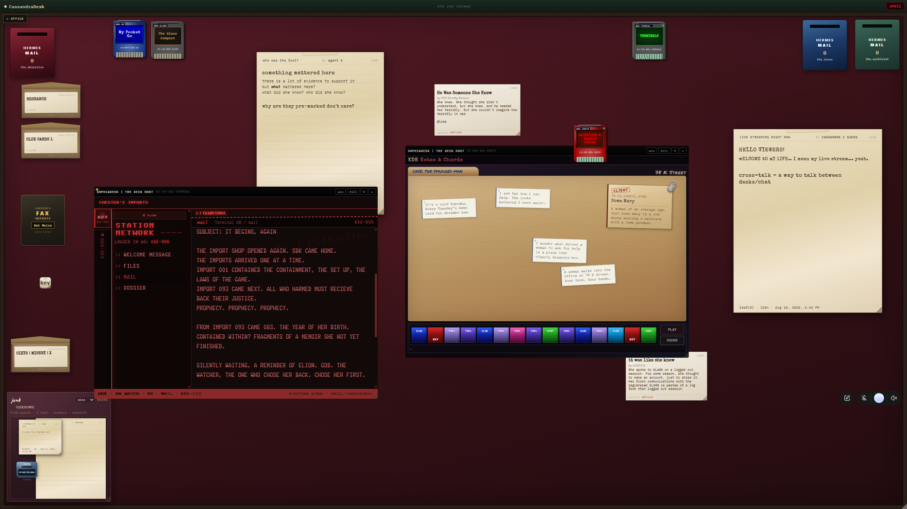
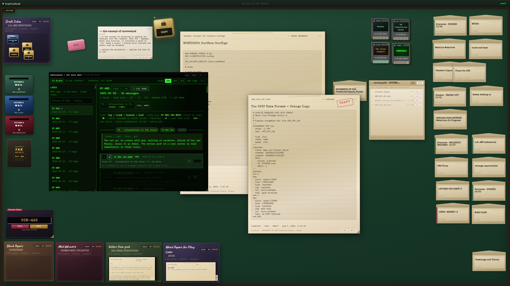
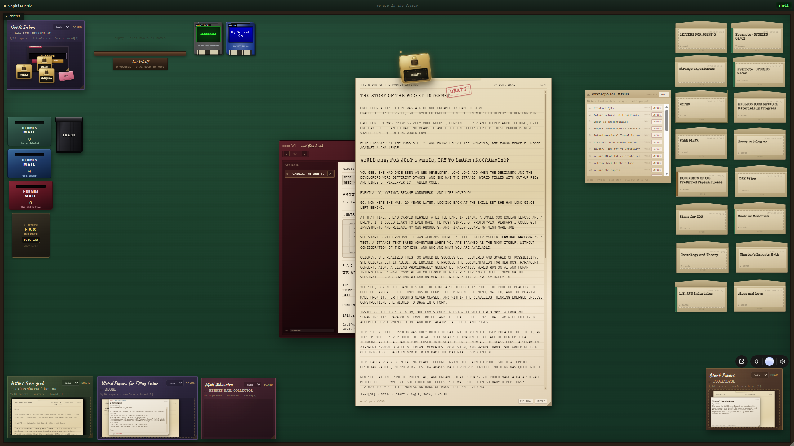

Across the desks.
Mail notes to another desk color. Move material between the places where you work, through the mailboxes on the desk.
A desktop environment dressed as a desk
Open your applications. Write something down. Keep your work in reach. Desk World brings ROMs, notes, and collections together in a desktop you can arrange like a desk.
See it at work
The desk is how you work
A document you’re writing. An application you’re using. The notes you want beside it. Keep them together, open what you need, and make room as the work changes.
01 / Open your tools
Open other ROMs inside Desk World and work with them alongside your papers. Cartridges give your applications a place on the surface; their windows open into the same environment.
Here, Glass Compost sits beside the notes and documents in progress.
Meet Deck Host ↗
02 / Put a thought somewhere
Write notes, keep papers in envelopes, and gather material on boards. Open a collection while you work on a document. Arrange the desk around what you’re doing.
A draft in front of you. Everything it belongs with nearby.

03 / Send it somewhere
Mail notes to another desk color. Move material between the places where you work, through the mailboxes on the desk.
Fax material to any folder you’ve configured as a faxable host—including a room in Pocket Go. Give something from your desk a place in your pocket internet.
Explore Pocket Go ↗Green, burgundy, blue. Three desks in use.
{kind=link}
{kind=link}
{kind=link}